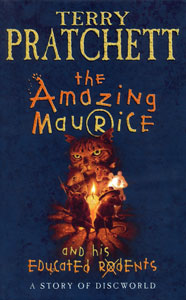
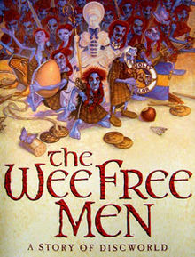
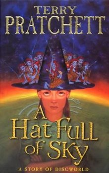
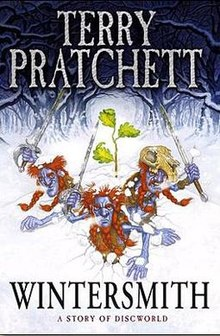
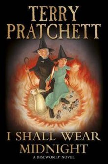

Un monde fantasmagorique: Le Disque Monde par Terry Prattchet
Re-bonsoir voyageur ! Ce sera les Annales du Disque Monde par Terry Prattchet alors ? C'est un choix exquis je dois avouer. Bon, love toi dans ce fauteuil là bas, et ne fais pas attention à son regard méchant, ni à son air de caïd: il est innofensif.
Allons bon, trêve de plaisanteries, passons à la présentation !
Mais enfin, qu'est-ce que c'est qu'un disque machin ?
Je dois avouer que décrire cet univers est un tâche assez ardue, alors je vais commencer par le commencement. Imaginez (vous allez le faire assez souvent dans ces livres), un monde qui a une forme de Disque. Jusque là, tout va bien, maintenant on va prendre du recul. Ce disque est posé sur le dos de 4 éléphants géants, qui sont eux même sur le dos d'une tortue (A'Tuin) qui nage à travers l'espace intersidéral
La première caractéristique de ce monde, c'est la magie. C'est elle qui a transformé le bibliothécaire en orang-outan (ce dont il ne se plaint pas d'ailleurs), c'est elle qui a fait d'un dragon le roi, euh la reine, de Ankh-Morpork (pas pour longtemps certes), c'est elle qui fait que l'on peut rattraper la lumière si on va suffisamment vite, c'est elle qui fait que les livres de magie sont VIVANTS et parfois même DANGEREUX (ce n'est pas pour que les voleurs ne dérobent pas le livres qu'ils sont enchaînés sur les étagères des bibliothèques mais pour que les livres n'attaquent pas tout ce qui passe dans les allées). Tiens en parlant de lumière, il y a une huitième couleur sur le monde-disque : l'octarine, la couleur de la magie.
La seconde, c'est les dieux; plus on y croit, plus ils existent. Donc si on y croit plus ... c'est pour cela qu'il jouent entre eux, avec le monde, pour avoir des fidèles, donc des croyants, donc de la puissance, donc plus de fidèles, ect...
Mais au-dessus de tous, il y a le destin. Et la mort. Que seuls les magiciens, les rois et quelques élus peuvent voir. Enfin, de leur vivant s'entend. Même un dieu peut mourir, si il perd TOUS ses fidèles. Ou du moins si ils ne croient plus en LUI mais seulement en ses prêtres.
Il y a deux sortes d'utilisateurs de magie :
- Les magiciens, académiques, parfois diplômés de l'Université Invisible, qui aiment la magie qui se VOIT (si ça ne voyait pas, personne ne saurait qui est un magicien, non ?). Il faut être le huitième fils d'un huitième fils pour pouvoir être magicien. Oui un FILS. Pas une fille. C'est pas pour les filles la vrai magie.
- Les sorcières, dans leur bois, toutes de noir vêtues, hideuses mais que tout le monde ou presque va voir au village. Oui bon il y en a de jolies ou qui habitent en ville, ou habillée en vert. Mais elles restent des sorcières tout de même !
Si jamais cela vous intéresse, vous pourrez trouver une description plus exhaustive sur Wikipedia ou alors sur ce site
L'âme du livre: les personnages
Les histoires du Disque Monde sont des œuvres indépendantes qui se déroulent dans le même univers fantastique. Cependant, un certain nombre de romans et d'histoires peuvent être regroupés en grands arcs traitant d'un nombre donné de personnages et d'événements, et certains livres font référence à des événements antérieurs (ou ultérieurs). Certains thèmes principaux de la série Discworld sont:
-
Rincevent
Rincevent était le premier protagoniste du Disque Monde; un sorcier sans compétence, sans qualifications magiques et sans intérêt pour l'héroïsme. Il est l'archétype du lâche mais est constamment poussé dans des aventures extrêmement dangereuses. Dans The Last Hero, il déclare catégoriquement qu'il ne souhaite pas se joindre à une expédition pour explorer le bord du disque - mais, étant entièrement orienté pour l'expédition à l'époque, clarifie en disant que toute protestation de sa part est futile, car il arrivera quelque chose qui l'amènera de toute façon dans l'expédition. En tant que tel, non seulement il réussit constamment à rester en vie, mais il sauve également Le Disque Monde à plusieurs reprises.
-
La Mort
La mort apparaît dans tous les romans sauf The Wee Free Men et Snuff, bien que parfois avec seulement quelques lignes. Comme le veut la tradition, il s'agit d'un squelette de sept pieds de haut dans une robe noire qui se tient à califourchon sur un cheval pâle (appelé Binky). Son dialogue est toujours représenté en petites majuscules, et sans guillemets, car plusieurs personnages affirment que la voix de la Mort semble arriver dans leurs têtes sans réellement passer par leurs oreilles comme un son.
En tant que personnification anthropomorphique de la mort, la mort a pour tâche de guider les âmes de ce monde vers l'autre. Au fil des millénaires dans le rôle, il (oui il, même si il lui manque les gonades, on utilise les pronoms masculins pour designer La Mort) a développé une fascination pour l'humanité, allant même jusqu'à se créer une maison dans sa dimension personnelle.
-
Les Sorcières
Les sorcières dans l'univers de Pratchett sont en grande partie dépouillées de leurs associations occultistes modernes (bien que Pratchett utilise fréquemment ses histoires pour méditer sur de telles conceptions de la sorcellerie), et agissent comme des herboristes, des arbitres et des femmes sages. Cela ne veut pas dire que les sorcières sur le disque ne peuvent pas utiliser la magie; ils préfèrent simplement ne pas y trouver une psychologie simple mais astucieusement appliquée (souvent appelée «têtologie») beaucoup plus efficace.
La principale sorcière de la série est Mémé Ciredutemps, qui semble à première vue être une vieille créature taciturne et amère, originaire du petit pays montagnard de Lancre. Elle méprise en grande partie les gens mais assume le rôle de leur guérisseuse et protectrice parce que personne d'autre ne peut faire le travail aussi bien qu'elle le peut. Son amie la plus proche est Nounou Ogg, une sorcière joviale et sympathique avec la «touche commune» qui apprécie une fumée et une pinte de bière, menant souvent à ses chansons folkloriques de débauche, y compris la fameuse "Chanson du Hérisson". Les deux prennent des apprentis sorcières, d'abord Magrat Garlick, puis Agnes Nitt, puis Tiffany Aching, qui à leur tour deviennent des sorcières accomplies à part entière, et, dans le cas de Magrat, Reine de Lancre.
-
Tiffany Achning
Tiffany Aching est une jeune apprentie sorcière. Ses histoires sont souvent sur des quêtes d'héros mythiques parallèles, mais elles parlent aussi des difficultés de Tiffany qu'elle encontre en tant que jeune femme maturant en femme. Elle est aidé dans sa tâchepar les Nac Mac Feegle, un gang tatoué de bleu, haut de 6 pouces, buveurs invétérés et qui parle fort aussi appelés les "Ch'tits hommes libres" qui servent en tant que ses gardiens. Mémé Ciredutemps ainsi que Nounou Ogg sont également apparus dans ses histoires.
Les Romans
La série des Annales du Disque-Monde est très très longue, donc je ne vais pas te prendre trop de ton temps Voyageur, et je ne vais te présenter que les Romans sortis sur le personnage de Tiphaine Patraque
| N° | Année de publication (VO) | Nom | Couverture |
|---|---|---|---|
| 28 | Le Fabuleux Maurice et ses rongeurs savants (The Amazing Maurice and his Educated Rodents) |  | |
| 30 | Les Ch'tits Hommes libres (The Wee Free Men) |  | |
| 32 | Un chapeau de ciel (A Hat Full of Sky) |  | |
| 35 | L'Hiverrier (Wintersmith) |  | |
| 38 | Je m'habillerai de nuit (I Shall Wear Midnight) |  | |
| 41 | La Couronne du berger (The Shepherd's Crown) |  |